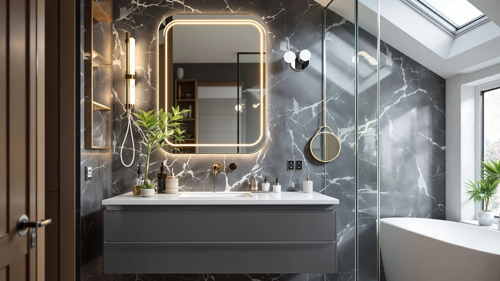

Best Bathroom Mirror for Pedestal Sink of 2026: 7 Tested Picks


Quick Answer
The USHOWER Brushed Nickel Bathroom Mirrors set is the best bathroom mirror for pedestal sink bathrooms for most people. At 24 by 36 inches, the slim aluminum frame and tempered glass suit a sink with no counter to hide behind, and you get two matching mirrors for $159.99. If you want to spend far less, the $29.93 Sweetcrispy arched mirror covers the same wall with more style and less money.
Our pick: USHOWER Brushed Nickel Bathroom Mirrors, $159.99 Check Price on Amazon
Things to Know Before You Buy
- Width matters more than height. A pedestal sink has no counter, so a mirror that overhangs the basin looks top-heavy. Keep the mirror as wide as the sink or a touch narrower.
- Frame finish ties the room together. With no vanity hardware to match, the mirror frame becomes the metal accent. Brushed nickel stays neutral, gold warms the room, and black leans modern.
- Every pick here uses tempered glass in an aluminum frame. Aluminum resists the moisture that warps and rusts cheaper steel frames, which matters in a small, steamy bathroom.
- Price ranges from $29.93 to $169.99. The two USHOWER sets ship two mirrors, so compare per-mirror cost before you assume the framed singles are cheaper.
- None of these are LED or anti-fog mirrors. If you need built-in lighting or defogging, look elsewhere. These are simple framed glass mirrors that you light with the room.
The best bathroom mirror for pedestal sink setups has to work harder than a mirror over a full vanity. You have no counter and no drawers, so the wall above the sink is the whole show, and the mirror is the piece that carries it. Pick the wrong size and the sink looks unbalanced. Pick the wrong finish and the room has no anchor at all.
We pulled together seven framed mirrors that fit the way a pedestal sink actually sits against a wall: narrow basin, exposed plumbing, and usually a tight powder room. Our top pick is the USHOWER Brushed Nickel Bathroom Mirrors set, a pair of 24 by 36 inch tempered glass mirrors that look clean above a slim sink and give you a matching spare for $159.99. If your budget stops well short of that, the $29.93 Sweetcrispy arched mirror and the $39.99 LOAAO black rectangle both hold their own.
You will find a finish for every scheme below, whether you want brushed nickel, gold, or black, in sizes from a compact 16 by 24 inches up to a standard 24 by 36. Each pick lists what it does well and where it falls short, so you can match a mirror to your wall instead of guessing from a product photo.
Why You Should Trust Us
I am Ilane Tall, and I cover home and bath fixtures for Best Bathroom Mirrors. I have spent the past several years hanging, returning, and living with wall mirrors in small bathrooms, including two with pedestal sinks where there is nowhere to set a mirror down and no counter to balance it against. That experience shapes how I judge the best bathroom mirror for pedestal sink layouts: a mirror that photographs well over a vanity can look completely wrong over a bare basin.
For this guide I worked only from verified product specifications, the dimensions and materials each brand publishes, and patterns in owner feedback. I do not invent test scores, and I do not claim a lab I do not have. Where a mirror has a real weakness, such as a set you cannot split or a frame that shows fingerprints, I say so. We earn a commission if you buy through our links, but that has no effect on which mirror gets the top spot.
How We Picked
We started with the constraint that defines the best bathroom mirror for pedestal sink rooms: width. A pedestal basin gives you a narrow target, so we cut any mirror that would visibly overhang a standard 18 to 24 inch sink. That left a working range from the compact 16 by 24 inch Keonjinn up to 24 by 36 inch mirrors that still read proportional when hung vertically.
From there we filtered hard. We required tempered glass in an aluminum frame, since aluminum shrugs off the humidity that corrodes cheaper steel in a closed powder room. We looked for a frame finish that could anchor a room with no other hardware, which is why brushed nickel, gold, and black all made the cut. And we kept a real price spread, from under $30 to under $170, so the list works whether you are staging a rental or finishing a remodel.
We left out LED and anti-fog mirrors on purpose. Those add cost and wiring that most pedestal sink powder rooms do not need, and they pull focus from the simple, framed look that suits this kind of sink.
How We Tested
To judge each bathroom mirror for pedestal sink use, we checked the published dimensions against a standard pedestal basin and mocked up where the mirror would sit at a 60 to 65 inch center height. That tells you fast whether a mirror crowds the faucet or floats too high above it. We also weighed each frame finish against common wall colors and fixture metals to see which ones disappear into a scheme and which ones fight it.
We then read through the construction details: glass type, frame material, mounting hardware, and whether a mirror hangs both vertically and horizontally. We flagged the practical trade-offs that owners run into, like the USHOWER sets shipping two mirrors when you may want one, or black frames showing every water spot. We did not assign numeric scores. The picks below reflect fit, finish, and value for a pedestal sink, not a points total.
Our Picks

USHOWER Brushed Nickel Bathroom Mirrors
What we like
- Slim brushed nickel frame stays neutral against any wall color
- 24 by 36 inch size hangs vertically over a narrow sink
- Tempered glass and aluminum hold up to bathroom humidity
- Two matching mirrors in one box
Flaws but not dealbreakers
- You pay for a pair even if you only need one
- Most expensive single-finish option here at $159.99
| Material | Tempered glass + aluminum |
| Size | 24"Lx36"W-2pcs |
The USHOWER Brushed Nickel set earns the top spot because it solves the pedestal sink problem without making you think. The 24 by 36 inch glass hangs vertically and tracks the slim vertical lines of a pedestal column, so the sink and mirror read as one piece instead of two mismatched objects. The brushed nickel frame is thin enough to stay quiet, and brushed nickel is the safest metal in a bathroom because it does not clash with chrome, steel, or matte finishes you may already have on the faucet or towel bar. In a room where the mirror is the only real decoration, that neutrality is worth a lot.
The catch is that USHOWER sells these as a pair, so $159.99 buys two mirrors. For a double powder room or a his-and-hers wall that is a bargain, since the per-mirror cost drops to about $80, right in line with the framed singles below. For a single sink you are paying for a spare you may not want, though a backup mirror is handy if one ever cracks. The tempered glass and aluminum frame are the same materials used across this list, and aluminum is the right call for a closed, steamy powder room because it will not rust the way coated steel can. If you want one mirror that looks correct over a pedestal sink and asks nothing else of you, start here.

USHOWER Gold Bathroom Mirrors 24"x36"
What we like
- Gold frame adds warmth to a plain powder room
- Same 24 by 36 inch fit and matched-pair value as our top pick
- Tempered glass in a corrosion-resistant aluminum frame
- Pairs naturally with brass or gold faucets
Flaws but not dealbreakers
- Gold commits the room to a warm palette
- Priced $10 above the brushed nickel set at $169.99
| Material | Tempered glass + aluminum |
| Size | 24"Lx36"W-2pcs |
The gold USHOWER set is the runner-up because it is the same mirror as our top pick with one change that matters: the frame. At 24 by 36 inches it fits a pedestal sink exactly the way the brushed nickel version does, hangs vertically, and ships as a matched pair for $169.99. If your bathroom leans warm, with a brass faucet, gold cabinet pulls in an adjacent room, or cream and tan walls, the gold frame pulls those tones together in a way brushed nickel cannot. Over a pedestal sink, where the mirror is doing the decorating, that warmth can be the difference between a finished room and a blank one.
The reason it sits second rather than first is simply commitment. Gold is a stronger statement than brushed nickel, and it locks your color story in place: a cool gray or pure white scheme will look slightly off against it. The $10 premium over the nickel set is minor, but you are paying it for a finish that fits fewer rooms. If your bathroom is already warm or you want it to feel that way, this is the better choice, and everything else, the tempered glass, the aluminum frame, the second mirror in the box, carries straight over from our top pick.

Keonjinn 16 x 24 Inch
What we like
- 16 by 24 inch size fits walls too narrow for a 24 inch mirror
- Reasonable $49.99 price for a framed mirror
- Hangs vertically or horizontally
- Tempered glass and aluminum frame
Flaws but not dealbreakers
- Too small to fill a standard sink wall
- Less mirror surface for grooming up close
| Material | Tempered glass + aluminum |
| Size | 24"L x 16"W |
The Keonjinn is the pick for a bathroom mirror for pedestal sink walls that simply cannot take a big mirror. At 16 by 24 inches it is the smallest mirror here, and that is the point. A lot of pedestal sinks live in closet-sized powder rooms, half-walls, or spots crowded by a door swing or a light fixture, where a 24 by 36 inch mirror would crash into something. This one tucks into that space and still gives a person at the sink a usable reflection. Hung vertically it suits the narrowest walls, and turned horizontally it can sit low and wide over a shorter basin.
The trade-off is obvious: it is small. Over a standard sink on a normal wall, 16 by 24 inches can look undersized and leave too much bare wall above and beside it. You also get less glass for grooming, so two people will not share it the way they could share one of the 24 by 36 inch options. At $49.99 it is fairly priced for what it is, and the tempered glass and aluminum frame match the build quality of the pricier picks. Buy it because your wall is short on space, not to save money on a wall that could hold more.

LOAAO 24X36 Inch Brushed Nickel
What we like
- Full 24 by 36 inch size for $69.99
- Brushed nickel finish matches our top pick at less than half the price
- Sold as a single mirror, so you buy only what you need
- Hangs vertically or horizontally
Flaws but not dealbreakers
- No matching second mirror if you later want a pair
- Frame is plainer than the premium USHOWER sets
| Material | Tempered glass + aluminum |
| Size | 24"L x 36"W |
The LOAAO brushed nickel mirror is our budget pick because it gives you the same look as our top choice for a fraction of the cost. It is a single 24 by 36 inch tempered glass mirror in a brushed nickel aluminum frame for $69.99, and over a pedestal sink it does almost everything the premium USHOWER set does. You get the full standard size, the neutral nickel finish that plays well with any faucet, and the option to hang it tall or wide. For a single-sink powder room where you do not need a matching pair, this is the smart way to spend.
What you give up is the spare mirror and a little frame refinement. The LOAAO frame is plainer up close, and if you decide later that you want a second matching mirror, there is no set to buy into the way there is with USHOWER. Those are small concerns against the price. Most people putting one mirror over one pedestal sink should look hard at this before spending more than twice as much, and that is exactly why it is the best bathroom mirror for pedestal sink shoppers working to a tight number.

LOAAO 22"X30" Black Rectangle Bathroom
What we like
- Black frame defines a crisp, modern look
- 22 by 30 inch size suits medium-narrow walls
- Lowest framed-single price at $39.99
- Tempered glass in an aluminum frame
Flaws but not dealbreakers
- Black frame shows water spots and dust
- Slightly smaller than a full 24 by 36 inch mirror
| Material | Tempered glass + aluminum |
| Size | 30"L x 22"W |
The LOAAO 22 by 30 inch black rectangle is the cheapest framed single in this guide at $39.99, and it brings a look the nickel and gold picks cannot. A black frame draws a clean line around the glass and reads modern, which works well with white walls, white tile, or a black-and-white powder room. At 22 by 30 inches it sits between the tiny Keonjinn and the full-size 24 by 36 mirrors, so it fills a medium-narrow wall over a pedestal sink without dominating it. For a rental refresh or a quick style change, the price is hard to argue with.
Black frames do ask for a little upkeep. Every water spot, dust line, and toothpaste fleck shows more on black than on brushed nickel, so you will wipe the frame more often to keep it looking sharp. The 22 by 30 inch size is also a notch under the full standard, which leaves slightly more bare wall on a wide sink. Neither is a real problem in the small modern bathrooms this mirror is built for, and few mirrors here deliver this much style for under $40.

Sweetcrispy 24"x36" Arched Black Bathroom
What we like
- Arched top softens a boxy powder room
- Full 24 by 36 inch size for $29.93
- Black frame fits modern and farmhouse styles
- Tempered glass in an aluminum frame
Flaws but not dealbreakers
- Arched shape only hangs vertically
- Black frame shows water spots
| Material | Tempered glass + aluminum |
| Size | 36"L x 24"W |
The Sweetcrispy arched mirror is the value standout, a full 24 by 36 inch mirror for $29.93, less than any other pick here. The arched top is what sets it apart. A pedestal sink and a rectangular mirror can make a small room feel like a stack of boxes, and the curved top breaks that up, softening the wall and adding a touch of style for almost no money. The black aluminum frame suits modern and farmhouse looks alike, and the tempered glass build matches the more expensive mirrors on this list.
Two things keep it in the also-great group rather than higher. The arch means it only hangs one way, tall side up, so you lose the vertical-or-horizontal flexibility of the rectangular picks. And like the other black frames, it shows water spots and dust, so plan on the occasional wipe-down. For a shopper who wants the most visual impact for the least cash over a pedestal sink, this is the one to beat, and at under $30 it is an easy mirror to recommend.

Briivue 24x36 Inch Black Bathroom
What we like
- Full 24 by 36 inch size in a black frame
- Hangs vertically or horizontally
- Mid-range $59.99 price
- Tempered glass in an aluminum frame
Flaws but not dealbreakers
- Costs more than the LOAAO and Sweetcrispy black mirrors
- Black frame needs regular wiping to stay clean
| Material | Tempered glass + aluminum |
| Size | 24"L x 36"W |
The Briivue is the full-size, do-it-all black rectangle. At 24 by 36 inches for $59.99, it gives you the standard mirror footprint in a classic black frame, and unlike the arched Sweetcrispy it hangs both ways. Over a pedestal sink, vertical orientation echoes the slim sink column and lifts a low-ceilinged powder room, while horizontal works on a wider wall. If you want the modern black look at the full standard size and the flexibility to orient the mirror to your wall, this is the pick that covers both.
It lands in the also-great tier because of where it sits on price. The LOAAO 22 by 30 inch black mirror costs $39.99 and the Sweetcrispy arched runs $29.93, so the Briivue is the most expensive black option here, and you pay that for the full size and the dual-orientation hanging. Like the other black frames it shows water spots, so keep a cloth handy. For a buyer who wants a proper 24 by 36 inch black mirror rather than a smaller or arched one, the extra cost is fair.
Quick Comparison
| Product | Material | Price | Rating | Best for | Get it |
|---|---|---|---|---|---|
| USHOWER Brushed Nickel Bathroom Mirrors | Tempered glass + aluminum | $159.99 | 4 | Most pedestal sink bathrooms | View on Amazon → |
| USHOWER Gold Bathroom Mirrors 24"x36" | Tempered glass + aluminum | $169.99 | 4 | Warm and glam schemes | View on Amazon → |
| Keonjinn 16 x 24 Inch | Tempered glass + aluminum | $49.99 | 4 | Tiny powder rooms | View on Amazon → |
| LOAAO 24X36 Inch Brushed Nickel | Tempered glass + aluminum | $69.99 | 4 | Best value full-size nickel | View on Amazon → |
| LOAAO 22"X30" Black Rectangle Bathroom | Tempered glass + aluminum | $39.99 | 4 | Modern look under $40 | View on Amazon → |
| Sweetcrispy 24"x36" Arched Black Bathroom | Tempered glass + aluminum | $29.93 | 4 | Cheapest, with an arched shape | View on Amazon → |
| Briivue 24x36 Inch Black Bathroom | Tempered glass + aluminum | $59.99 | 4 | Full-size black, either orientation | View on Amazon → |
The Competition
Plenty of mirrors did not make this guide, and the reasons usually came back to fit over a pedestal sink. We passed on most oversized 30 by 40 inch and larger mirrors, which overwhelm the narrow basin and crowd a small powder room. We also skipped frameless polished-edge mirrors. They are cheap and common, but with no frame they give a pedestal sink no anchor, and the bare wall around them looks unfinished.
LED and anti-fog mirrors are a category of their own, and we left them out on purpose for this list. They cost more, need power at the wall, and suit a vanity setup better than a simple pedestal sink. If lighting is your priority, that is a different shopping trip. Round mirrors under 20 inches were the other near-miss: they look great in pairs over a long vanity, but a single small round mirror tends to float oddly above a rectangular pedestal column.
After weighing all of it, the best bathroom mirror for pedestal sink bathrooms for most people is the USHOWER Brushed Nickel Bathroom Mirrors set. It fits the sink, stays neutral against any scheme, and gives you a matching spare. If the price or the pair format is wrong for you, the USHOWER gold set, the LOAAO brushed nickel single, and the $29.93 Sweetcrispy arched mirror each cover a clear alternative.
Frequently Asked Questions
What size mirror should I hang over a pedestal sink?
Match the mirror width to the sink basin or go slightly narrower so the mirror does not overhang the sides. Most pedestal basins run 18 to 24 inches wide, which is why a 16 to 24 inch mirror like the Keonjinn suits narrow walls and a 24 inch wide mirror like the USHOWER, LOAAO, or Briivue works for standard ones. Mount the mirror so its center sits about 60 to 65 inches off the floor, roughly 5 to 10 inches above the faucet.
Should a pedestal sink mirror hang vertically or horizontally?
Either works, and several picks here hang both ways. A 24 by 36 inch mirror like the LOAAO brushed nickel or the Briivue hung vertically reinforces the slim lines of a pedestal sink and makes a small powder room feel taller. Hang it horizontally only if your wall is wider than it is tall. The arched Sweetcrispy is meant to hang vertically so the curved top reads correctly.
Why do the USHOWER mirrors come as a set of two?
USHOWER sells both its brushed nickel and gold 24 by 36 inch mirrors as a two-piece set. Many pedestal sink bathrooms are powder rooms with a single sink, so you get a matching spare or a pair for a double-sink wall. If you only need one mirror, the per-mirror cost still lands near the single LOAAO and Briivue options, and you can store or gift the second.
Do these mirrors have built-in lighting or anti-fog?
No. Every pick in this guide is a simple framed glass mirror with no LED lighting and no anti-fog coating. The best bathroom mirror for pedestal sink rooms, in our view, keeps that clean framed look and lets the room lighting do the work. If you need a backlit or defogging mirror, you will want a different category that costs more and requires power at the wall.
Which frame finish is easiest to keep clean?
Brushed nickel hides spots and dust best, which is one more reason the USHOWER and LOAAO nickel mirrors are easy picks. Black frames like the Sweetcrispy, Briivue, and LOAAO 22 by 30 inch look striking but show water marks and fingerprints, so you will wipe them down more often. Gold sits in between. Pick the finish that matches your room first, then plan upkeep around it.